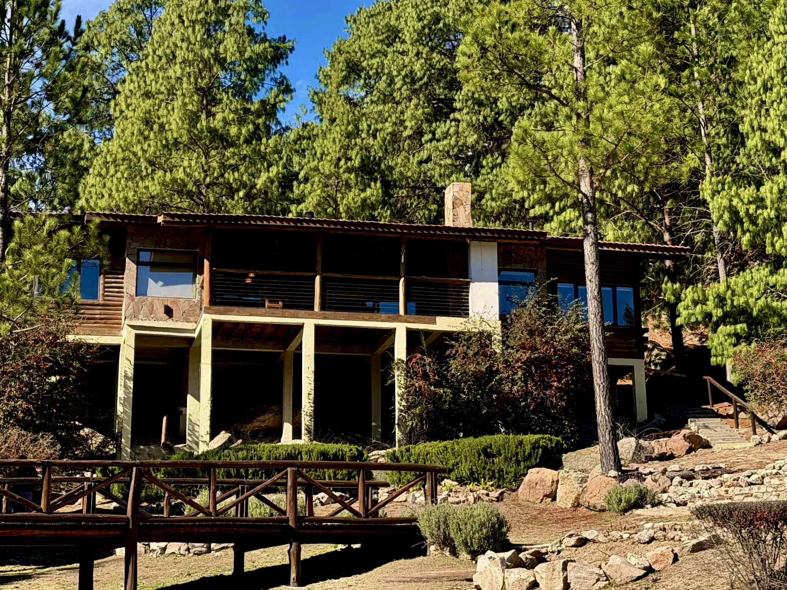
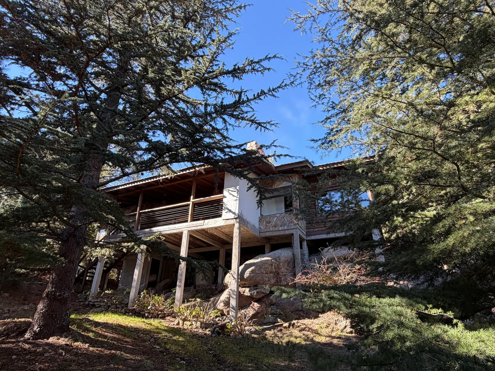
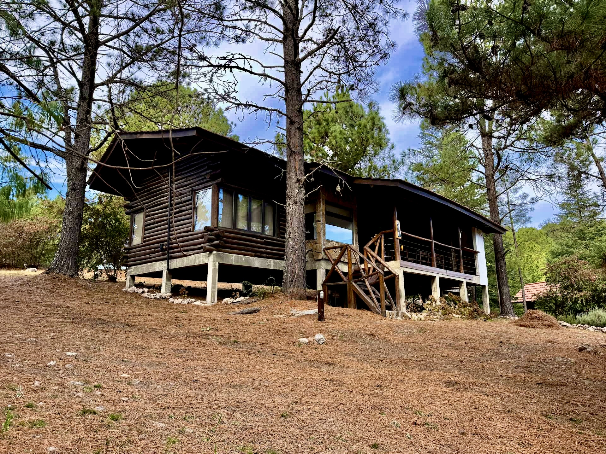

ALOJAMIENTOS
Cuatro formas de vivir El Remanso
Nuestros cuatro nidos comparten la misma calidad, comodidades y capacidad. Cada uno ofrece una ubicación distinta dentro del complejo para que cada estadía tenga su propio carácter.



NUESTRA FORMA DE RECIBIRTE
Nuestros cuatro nidos comparten la misma calidad, capacidad y comodidades. La asignación del alojamiento se realiza según la disponibilidad y las características de cada grupo para ofrecer siempre la mejor experiencia posible.